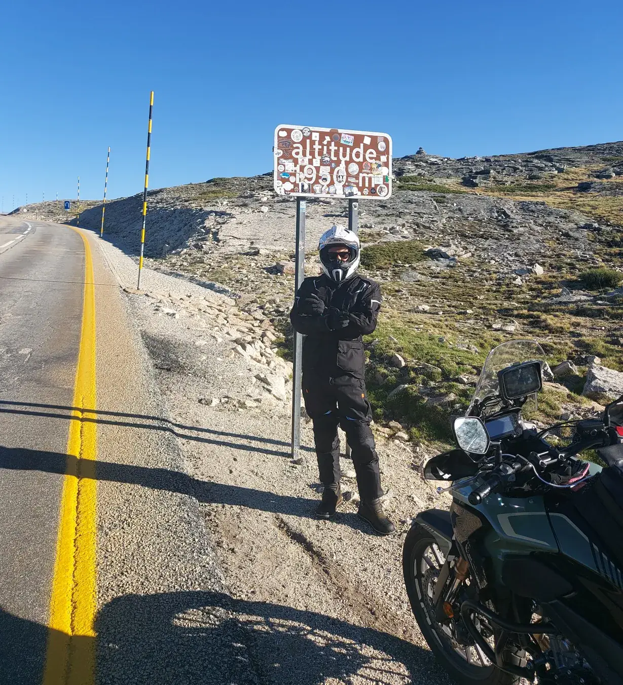
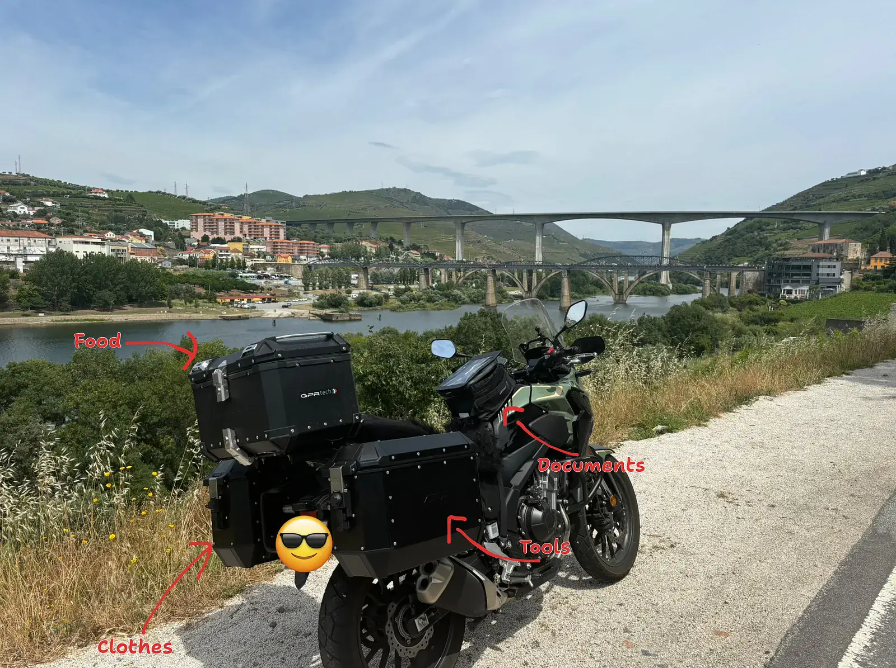
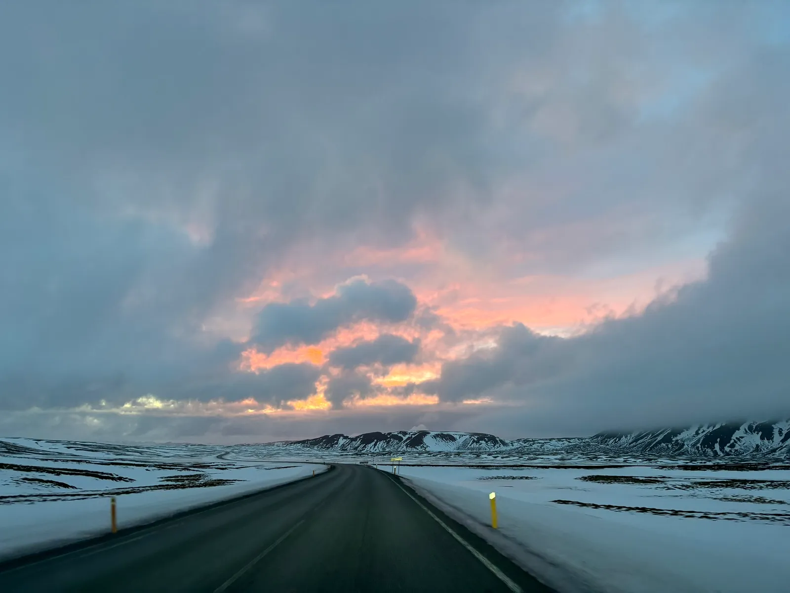

Imagine this: Your boss pulls you aside one day, eyes sparkling with excitement. "Kubernetes," he says. "It's the next big thing, and everyone's doing it. We need to get on board, pronto!"
And just like that, you're handed the keys to this shiny new vehicle called Kubernetes, with a vague instruction manual and a half-folded map. 😅
Confused, you start digging into what this new shiny thing is that everyone is using.
You encounter "Kubernetes".
☸️ Kubernetes?
To make it simple, and because I don't want to make this piece about the technical details of Kubernetes, we need to understand what Kubernetes is.
Kubernetes, also known as K8s, is an open-source platform that automates the deployment, scaling, and management of containerized applications.
That's it. A thing that manages containers. That manages applications.
With that out of the way, Kubernetes has in fact become the go-to platform for container orchestration.
But should everyone jump on the bandwagon?
💭 The Dream
If you go around the web to learn more about Kubernetes, you will find some benefits that K8s "can" bring into your organization:
📈 Scalability and Flexibility
⏰ Increased Efficiency and Productivity
💰 Cost Optimization
🔒 Reliability and High Availability
👥 Community and Ecosystem
🔐 Enhanced Security
I outlined the word "can" because if you ever tried to implement Kubernetes into your company, it's far from a dream. Especially if you have legacy systems and integrations in place.
If you try to adopt it without a proper strategy, you will have a bad time.
So, how can we have a smooth ride when trying to use Kubernetes for the first time?
🏍️ Let's start the Road Trip
Imagine that you want to take a road trip. A road trip to reach a destination, a place you really want to visit.
As a motorcycle lover myself, I like to do road trips with my motorcycle. I love the thrill of hitting the open road on two wheels. The feeling of freedom is unbelievable.
It's my meditation.

(me at the highest point of the trip)
Just like a road trip, you don't want your Kubernetes journey to fail. So you will try to prepare for it and make it happen the best way you can.
The same needs to happen if you are going to use Kubernetes inside your organization.
You need to set a destination. You need to prepare for it. You need to adapt along the way.
Yes, sure, you can just jump into your vehicle and leave, but you know that the trip will be must harder, and you might not even reach the destination that you want.
🎯 Set the destination
Before hitting the road, you need a destination that you want to go.
Yes, you can have pit stops along the way, but in the end, you want to reach somewhere.
This final destination are your business objectives.
What are the objectives that you want to reach?
⏩ Faster time to market?
🏗️ Efficient use of your infrastructure?
🦾 More resilience?
📈 Scalability?
Only you know what needs to improve. Only you can set the destination to reach the target objective of your organization.
Real business value is about delivering value to customers and getting the return for it. You have a business that creates value. Your customers want to consume that value. You get paid for that value.
Avoid adopting Kubernetes just because it's the latest trend = Avoid going to a popular place just because everyone is doing it
📋 Preparing for your trip

(only pack the essentials when traveling with limited space)
You now have a destination to go. Real objectives to target inside your company.
Now you need a vehicle. This is where Kubernetes comes in.
But operating a vehicle like Kubernetes is not easy.
It requires significant investments in building and maintaining a skilled team, refactoring applications to be containerized, implementing automation tools (e.g. Helm) and ongoing maintenance for it to run smoothly (k8s upgrades).
You need to honestly assess if your organization has the necessary resources and skills to adopt Kubernetes.
If you see that you lack the necessary capabilities to run K8s, you might want to postpone the trip and plan for a little longer.
Not the right Vehicle 🚫🚗
For simple applications, the overhead of k8s might be overkill.
Yes, you can use Managed Kubernetes services and the likes, but don't forget that an application requires more than an engine to run.
Don't be afraid to choose a smaller vehicle for your needs. It might be everything that you needed without the complicated maintenance (overhead) and it might even save you some fuel.
🚀 Start! But try to start small
Trying to migrate all your applications to Kubernetes at once, is like going on a 3-month International Trip without any stops and without previous experience on any kind of road trips.
Risky and exhausting. Likely to fail.
Start small. Domestic travel.
Start with low-risk, high-value applications that your organization has. These are applications that bring tangible benefits to customers.
Use Kubernetes for new developments before tackling legacy monoliths with complex integrations.
After getting comfortable and gaining more experience, you can start to plan for bigger trips.
🕳️ Navigating the Potholes
Along the way, during your journey, you will encounter challenges. Like in any adventure.
While Kubernetes might bring benefits to the organization, it can also bring challenges like:
📚 Complexity and Steep Learning Curve
Kubernetes has a complex architecture and requires significant investment in learning and skills development.
🔧 Application Refactoring and Modernization
Existing applications may require substantial refactoring to be Kubernetes-friendly, and migrating legacy monoliths can be time-consuming and costly.
🔍 Operational Overhead and Management
Kubernetes might introduce additional operational complexity, requiring ongoing management, updates, and troubleshooting.
🚀 Scalability and Performance Tuning
Scaling Kubernetes clusters effectively can be challenging and requires careful configuration and tuning.
🔒 Security and Compliance Concerns
Kubernetes introduces new security considerations and requires robust security practices, policies, and tools.
🌐 Integrating with Existing Ecosystems
Integrating Kubernetes with existing tools and platforms can be challenging, requiring careful planning for backwards compatibility.
You will inevitably step on some of these potholes. But at least now you can avoid the big ones.
🧠 Don't forget why you are doing this trip
You might get tired during the trip, and that's completely normal. Just don't forget why you are doing this.
Kubernetes is a powerful vehicle, but it won't magically create business value. It works best when aligned with a product mindset.
Don’t forget. Focus on the fundamentals:
🗺️ Develop a Roadmap. Prioritize.
🧩 Build loosely coupled microservices that can quickly adapt.
👁️ Add tests and monitoring to help you and customers along the way.
⏰ Find a time slot to let your team tackle tech debt.
💬 Get Feedback. Act on it.
Road trips are more enjoyable when you have a clear path.
🏁You reached your destination
You finally did it! You reached your main destination. Now what?
Well, now you will want to reflect on the trip to see what you missed, what could improve in the next one and what you learned along the way.
Did you reach all your business objectives? If not, why?
What were the most significant benefits from your Kubernetes implementation?
Did you achieve the desired improvements in customer value, innovation, efficiency, or other key metrics?
What challenges did you face along the way, and how did you overcome them?
How well did your team adapt to the new Kubernetes landscape? Are your software developers liking it?
These are just example questions that I would advise you to answer.
🌄 Remember, it's all about the journey not the destination

(one of the best trips of my life: Iceland.)
Yeah Yeah, I know, it's a cliché thing to say.
But guess what? It's the truth.
Kubernetes is a powerful tool, but it's not a silver bullet.
Adopting Kubernetes is not a one-time event; it's an ongoing process of learning, adapting, and improving.
You will always learn more each time you take the helm (yes, pun intended).
Happiness is a temporary event when you reach your destination.
One of the many reasons why you should never stop traveling.
Until Next Time 😎
Got thoughts? Questions? Just want to say hi? I'm all ears! You can find me on the professional network (LinkedIn) or the digital playground (X).
I'm always up for a chat and promise to get back to everyone. After all, the best part of writing is the conversations it starts.